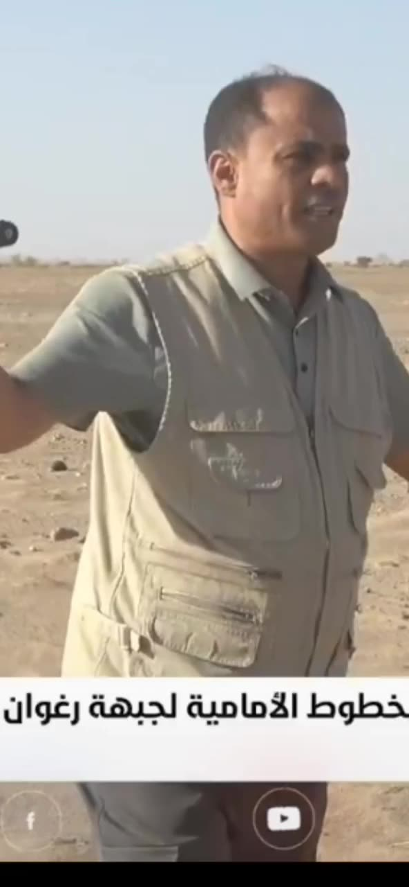

رغوان.. حين تصبح أرواح المقاتلين وقودًا للحرب، من يتحمل المسؤولية؟
قراءة إنسانية في مشاهد جبهة رغوان، ومسؤولية القيادة التي دفعت بالمقاتلين إلى الهجوم، وحقوق الجرحى والقتلى.


في رغوان.. صور تطرح سؤال المسؤولية
ليست المشاهد التي نقلتها كاميرا قناة سهيل الفضائية من جبهة رغوان مجرد حصيلة قتال تُضاف إلى نشرات الميدان؛ إنها مشاهد تضع قيمة حياة الإنسان اليمني في صميم النقاش. فخلف كل قتيل أسرة وحياة كان يمكن أن تسلك مسارًا آخر، ومسؤولية لا ينهيها توقف القتال.
الهجوم والمواجهة: تحديد الأدوار قبل إطلاق الأحكام
وفق التصريح الصادر عن قيادة المنطقة العسكرية السادسة في 17 نوفمبر، شنت جماعة الحوثيين هجومًا على مواقع القوات الحكومية في رغوان، وتصدت القوات المسلحة والمقاومة الشعبية لذلك الهجوم. وينبغي أن يظل هذا التحديد واضحًا عند قراءة الوقائع، لا أن يُختزل المشهد في عبارات عامة تطمس من هاجم ومن تصدى للهجوم.
المقاتلون الذين لا يجوز أن يتحولوا إلى أرقام
أظهرت مشاهد التقرير جثامين في المواقع الصحراوية. وهي تفتح أسئلة عن خطط قيادة الهجوم لتقليل الخسائر، وإخلاء المصابين، وانتشال الجثامين، وإبلاغ الأسر بمصير أبنائها. الصور تُظهر ما بقي في الميدان لحظة التصوير، لكنها لا تكشف وحدها كل قرارات القيادة أو ملابسات الانسحاب. ومن هنا تأتي ضرورة المساءلة والتوثيق، لا القفز إلى استنتاجات لا تحملها الصورة.
إسعاف الجريح: واقعة أعلنها قائد المنطقة السادسة
أعلن اللواء الركن هيكل حنتف، بحسب ما نشرته وكالة سبأ في 17 نوفمبر، أن القوات الحكومية أسعفت عددًا من جرحى الحوثيين إلى مستشفيات مأرب. وتتضح أهمية هذا التصريح في التمييز بين مواجهة القوة المهاجمة أثناء القتال، والتعامل الإنساني مع المصابين بعد سقوطهم أو خروجهم من المعركة.
الكرامة الإنسانية ليست مساواة في المسؤولية
لا تعني صيانة كرامة الإنسان مساواة المهاجم بالمدافع عن مواقعه، ولا تبرئة من يتخذ قرار الزج بالمقاتلين في مواجهة مميتة. لكنها تعني أن الجريح لا يفقد حقه في العلاج، وأن للقتيل حرمة، وأن لأسرة المفقود حقًا في معرفة مصيره. هذه حقوق لا تتعارض مع تحديد المسؤولية عن الهجوم، بل تجعل المساءلة أكثر دقة وعدلًا.
سؤال رغوان الذي لا ينبغي أن يضيع
من اتخذ قرار الهجوم؟ ما الاحتياطات التي اتُّخذت لحماية حياة المقاتلين؟ وما مصير من بقوا في الأرض بعد توقف الاشتباكات؟ هذه الأسئلة هي لبّ التحليل، ولا نحتاج إلى حشوها بملفات أخرى سبق أن تناولتها الشبكة في تقارير مستقلة.
مراجعة التوثيق
الوقائع العسكرية الواردة في هذا التحليل منسوبة إلى تصريح المنطقة العسكرية السادسة المنشور في سبأ يوم 17 نوفمبر 2026؛ أما المشاهد المرئية فمصدرها تقرير قناة سهيل. ويُفرّق النص بين ما يظهر في الصورة وبين الأسئلة التي تستوجب متابعة وتوثيقًا إضافيًا.